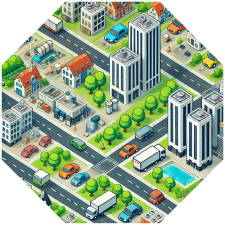
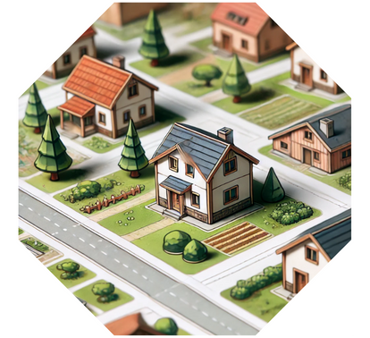
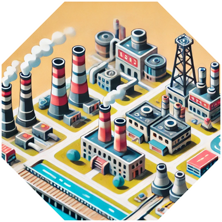
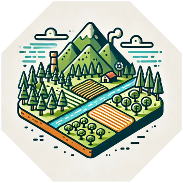
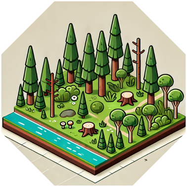
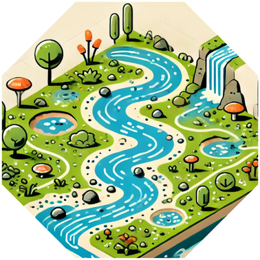
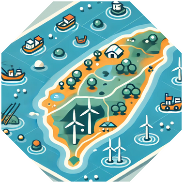
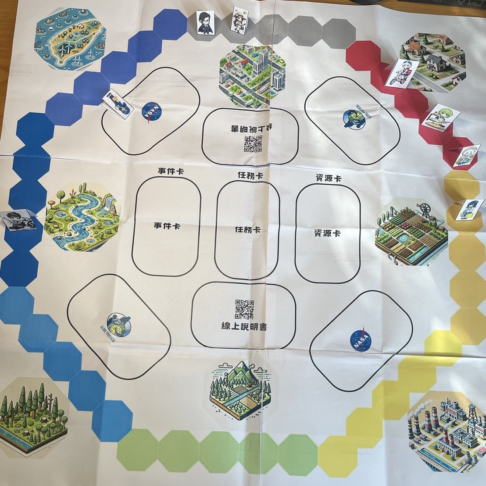

環境探索 - GLOBE 守護英雄
遊戲簡介
"環境探索 - GLOBE 守護英雄" 是一款結合環境教育與任務型遊戲玩法的卡牌類桌遊。玩家在遊戲中學習本地及全球環境議題、科學精神，透過分配自身擁有的資源卡解決任務，並藉由回答 GLOBE 協議相關內容與環境科學知識來獲得更多的得分。
故事背景 : 拯救地球的科學行動
未來的地球正面臨一場環境危機，氣候變遷、自然資源枯竭以及生態系統的崩壞威脅著人類的生存。全球的環保組織、學術機構以及各國政府決定聯合起來，啟動 NASA SPACE 計畫，一個旨在保護地球的國際合作行動。這一計畫基於 GLOBE （全球學習及觀測促進環境）計畫，呼籲全球公民和專業人士共同努力，為地球的未來採取行動。
作為 NASA SPACE 計畫的一部分，玩家們將扮演來自全球各地的環保英雄，如環保律師、小美媽媽、捕蜂人、茶農等角色。每個角色都擁有獨特的專業知識和資源，並肩負著拯救自己所在區域環境的重任。透過合作，玩家將在遊戲中應對環境災難，管理有限的資源，並尋找能夠修復地球生態的解決方案。
在遊戲中，玩家需要完成一系列的環保任務，包括淨化污染的水源、恢復森林、改善城市空氣質量等。這些任務並非由單一玩家完成，而是需要各角色之間的緊密合作與資源共享。玩家必須討論如何有效分配手中的資源卡，並制定長遠計劃來解決當前的環境問題。
隨著遊戲進行，環境的惡化速度加劇，玩家會面臨自然災害的隨機威脅，如洪水、乾旱或颱風。這些事件會影響玩家的進度，迫使他們重新調整策略。玩家需要靈活應變，將資源集中在最關鍵的問題上，以確保地球的生態能夠逐步恢復。
最終，當所有玩家成功完成環保任務並有效地控制環境災害時，地球的環境狀況將顯著改善， NASA SPACE 計畫的使命也將圓滿達成。玩家們不僅在遊戲中享受了團隊合作的樂趣，更深刻理解了保護環境的重要性。
桌遊規則
- 建議遊戲人數：4-6人
- 建議年齡：8歲以上
- 平均遊戲時長：30-60分鐘
卡牌簡介
- 角色卡：每位玩家選擇一個角色，每個角色具有特殊能力。
- 任務卡：這些卡片代表玩家在遊戲中需要完成的環境保護任務。每個地形皆有可進行任務之大目標，玩家可進行說明欲進行之任務屬於哪種目標，若其餘玩家皆認同其說明方式即為合理，反之玩家須選擇其他任務並重新對其餘玩家進行說明，若任務卡無符合地形之任務卡，則觸發特殊情況。
每張卡片上包括以下元素：- 任務名稱：例如“清理河流污染”或“監測雨水量”。
- 所需資源：完成任務所需的資源卡數量（如水資源卡、土壤資源卡等）。
- 科學挑戰：一些任務需要解答科學問題或根據科學知識卡回答問題（這有助於教育和學習）。
- 獎勵：成功完成任務後，玩家將獲得分數和資源。
- 資源卡：包括不同的自然資源
- 事件卡：每個回合結束時會抽取一張事件卡，這些事件可以是自然災害、氣候變化或污染事故。事件可能會：
- 影響某一區域的資源供應（例如“乾旱導致水資源減少”）。
- 迫使玩家應對挑戰，否則資源或分數會減少。
遊戲玩法
- 遊戲開始：
- 每位玩家選擇一個角色，並將選取角色放在地圖起點
- 每位玩家拿五張資源卡作為起始資源
- 抽取出與玩家數量相等的任務卡，並攤在桌面上
- 自由決定誰先開始。
- 每輪開始前可以互相討論是否要合作
- 回合進行：
- 如果玩家手排上的資源卡可以完成桌面上的任務，則根據玩家目前所在地形發動卡牌上的影響，並抽取新的一張任務卡取代原任務卡。
(特殊情況:若當前任務卡均無法對應當下所在地形，則該回合無法進行任務，遊下一位玩家繼續遊戲，仍可抽取一張資源卡；若場上無任何一張任務卡與對應地形匹配，則重新抽取五張任務卡進行更替，同時所有玩家向後退一個地形，若已在最初地形則退回原點。 - 任務解決後由玩家回答，完成任務後可掃描任務卡上QR Code，內涵一題加分題，若玩家答對即可再前進一格，答錯將不另進行懲罰(角色本身技能影響不在此限)
- 回合結束前，玩家抽取一張新的資源卡。
- 如果玩家手排上的資源卡可以完成桌面上的任務，則根據玩家目前所在地形發動卡牌上的影響，並抽取新的一張任務卡取代原任務卡。
- 結束遊戲：當某位玩家抵達終點，遊戲結束。玩家分享遊戲中學到的環境知識和解決問題的經驗。
地形敘述
- 城市區域
 - 郊區與小鎮
 - 農業區域

- 工業區域
 - 山區
 - 森林區域
 - 河流與濕地
 - 海岸區域

角色卡設計
- 律師
- 背景：熟悉環境法規，能夠運用法律手段保護環境，解決環保糾紛。
- 特殊能力：解決任務時，消耗的法律資源卡數量-1。
- 小美媽媽
- 背景：一個關心孩子成長和環境的媽媽，總是在日常生活中教育孩子環保知識。
- 特殊能力：每次在進行任務時，消耗植物或水資源卡-1。
- 早餐店阿姨
- 背景：日常生活中關注節約資源，提倡減塑和環保的經營方式。
- 特殊能力：抽卡回合能夠多抽1張資源卡
- 茶農
- 背景：生活在山區，熟悉生態農業，擅長使用可持續的農業技術種植茶葉。
- 特殊能力：直接消耗1張水資源卡，前進2格，每回合最多消耗1張。
- 外送員
- 背景：每天在城市中穿梭，對城市環境問題（如交通污染、廢棄物處理）十分敏感。
- 特殊能力：在城市區域完成任務，直接進到下個區域。
- 機車行老闆
- 背景：熟悉機車修理和改裝，提倡綠能交通，關注交通污染的減少。
- 特殊能力：完成任務後，擲骰子，若擲到 1、2 則退後 1 格，擲到 3、4 則前進1 格，擲到 5、6 則前進 2 格。
- 捕蜂人
- 背景：專業處理蜂群遷移與保護，了解蜜蜂在生態系統中的重要性。
- 特殊能力：在農業區域、森林區域、郊區與小鎮區域完成任務則額外前進2格。
- 吳教授
- 背景：大學教授，主要研究領域是現代宇宙學，具有豐富的學術背景。並對於氣功、八卦、易經有深入研究。
- 特殊能力：答對題目或是發現別人錯誤時前進2格，如果吳教授回答錯誤，則倒退1格。
資源卡種類
- 水資源
- 用途：適用於與水質管理、濕地保護、農業灌溉等任務。
- 卡片數量：15張
- 土壤資源
- 用途：適用於土壤監測、農業用地、森林保護等相關任務。
- 卡片數量：10張
- 植物資源
- 用途：適用於森林保護、植被種植、蜜蜂棲息地保護等任務。
- 卡片數量：12張
- 廢棄物資源
- 用途：適用於垃圾處理、工業污染控制等任務。
- 卡片數量：8張
- 能源資源
- 用途：適用於節能減碳、再生能源推廣等任務。
- 卡片數量：8張
- 空氣資源
- 用途：適用於空氣污染監測、城市環境管理等任務。
- 卡片數量：6張
- 教育資源
- 用途：適用於社區教育活動、環保推廣等任務。
- 卡片數量：6張
- 法律資源
- 用途：適用於與法律監管、政策推動等相關的任務，如工業廢水處理、污染防治。
- 卡片數量：4張
- 勞動力資源
- 用途：適用於需要多人協力的任務，如社區清理、植樹活動。
- 卡片數量：6張
- 科學知識資源
- 用途：適用於專業技術類的任務，如氣候變遷分析、科學研究。
- 卡片數量：6張
- 生物資源
- 用途：適用於保護動植物生態系統、蜜蜂棲息地等任務。
- 卡片數量：6張
任務卡設計
河川水質監測(3)
- 描述：利用科學方法監測當地河川的水質，識別污染源，保護水生生態系統。
- 所需資源卡：
- 水資源卡 × 2
- 科學知識資源卡 × 1
- 獲得獎勵：
- 分數：5 分
- 額外獲得 1 張科學知識資源卡
土壤健康評估(2)
- 描述：對農田土壤進行取樣和分析，改善土壤品質，促進可持續農業。
- 所需資源卡：
- 土壤資源卡 × 2
- 科學知識資源卡 × 1
- 獲得獎勵：
- 分數：5分
- 獲得 1 張植物資源卡
城市空氣品質改善(1)
- 描述：安裝空氣監測設備，推動減少空氣污染的措施。
- 所需資源卡：
- 空氣資源卡 × 2
- 能源資源卡 × 1
- 獲得獎勵：
- 分數：6 分
- 獲得 1 張教育資源卡
社區廢棄物管理(2)
- 描述：組織社區回收計劃，減少廢棄物對環境的影響。
- 所需資源卡：
- 廢棄物資源卡 × 2
- 教育資源卡 × 1
- 獲得獎勵：
- 分數：5 分
- 獲得 1 張勞動力資源卡
生物多樣性調查(2)
- 描述：進行當地生物物種的調查，建立生態保護計劃。
- 所需資源卡：
- 生物資源卡 × 2
- 科學知識資源卡 × 1
- 獲得獎勵：
- 分數：7 分
- 獲得 1 張植物資源卡
能源效率提升(1)
- 描述：在社區推廣節能設備，降低能源消耗和碳排放。
- 所需資源卡：
- 能源資源卡 × 2
- 教育資源卡 × 1
- 獲得獎勵：
- 分數：6 分
- 獲得 1 張空氣資源卡
森林復育計畫(2)
- 描述：種植本地樹種，恢復森林生態系統。
- 所需資源卡：
- 植物資源卡 × 3
- 勞動力資源卡 × 1
- 獲得獎勵：
- 分數：8 分
- 獲得 1 張生物資源卡
環境法規宣導(1)
- 描述：教育公眾關於環境保護法規，提升守法意識。
- 所需資源卡：
- 法律資源卡 × 1
- 教育資源卡 × 1
- 獲得獎勵：
- 分數：4 分
- 獲得 1 張法律資源卡
濕地保護(2)
- 描述：保護和恢復濕地環境，維護水鳥棲息地。
- 所需資源卡：
- 水資源卡 × 2
- 生物資源卡 × 1
- 獲得獎勵：
- 分數：7 分
- 獲得 1 張土壤資源卡
農業用水管理(2)
- 描述：優化灌溉技術，提升農業用水效率。
- 所需資源卡：
- 水資源卡 × 2
- 能源資源卡 × 1
- 獲得獎勵：
- 分數：5 分
- 獲得 1 張植物資源卡
海岸線清理(2)
- 描述：組織海灘清理活動，減少海洋垃圾。
- 所需資源卡：
- 廢棄物資源卡 × 2
- 勞動力資源卡 × 1
- 獲得獎勵：
- 分數：6 分
- 獲得 1 張水資源卡
土壤侵蝕防治(1)
- 描述：在山坡地區種植植被，防止土壤侵蝕。
- 所需資源卡：
- 土壤資源卡 × 1
- 植物資源卡 × 2
- 獲得獎勵：
- 分數：6 分
- 獲得 1 張生物資源卡
氣候變遷教育(1)
- 描述：開展氣候變遷相關的教育活動，提高公眾認識。
- 所需資源卡：
- 教育資源卡 × 2
- 科學知識資源卡 × 1
- 獲得獎勵：
- 分數：5 分
- 獲得 1 張能源資源卡
可再生能源開發(1)
- 描述：推動風能或太陽能等可再生能源項目。
- 所需資源卡：
- 能源資源卡 × 2
- 法律資源卡 × 1
- 獲得獎勵：
- 分數：7 分
- 獲得 1 張空氣資源卡
環境科學研討會(1)
- 描述：舉辦環境科學研討會，分享最新研究成果。
- 所需資源卡：
- 科學知識資源卡 × 2
- 教育資源卡 × 1
- 獲得獎勵：
- 分數：6 分
- 獲得 1 張法律資源卡
城市綠化(2)
- 描述：在城市中種植樹木和花卉，改善環境質量。
- 所需資源卡：
- 植物資源卡 × 2
- 勞動力資源卡 × 1
- 獲得獎勵：
- 分數：5 分
- 獲得 1 張空氣資源卡
廢氣排放監測(1)
- 描述：對工業區的廢氣排放進行監測，推動減排措施。
- 所需資源卡：
- 空氣資源卡 × 2
- 法律資源卡 × 1
- 獲得獎勵：
- 分數：7 分
- 獲得 1 張能源資源卡
環境保護志工培訓(1)
- 描述：培訓環保志工，參與各種環境保護活動。
- 所需資源卡：
- 教育資源卡 × 1
- 勞動力資源卡 × 2
- 獲得獎勵：
- 分數：4 分
- 獲得 1 張勞動力資源卡
生態旅遊推廣(1)
- 描述：發展生態旅遊，提升公眾對自然環境的認識。
- 所需資源卡：
- 生物資源卡 × 1
- 植物資源卡 × 1
- 教育資源卡 × 1
- 獲得獎勵：
- 分數：6 分
- 獲得 1 張水資源卡
環境法規執行(1)
- 描述：協助政府執行環境法規，打擊環境犯罪。
- 所需資源卡：
- 法律資源卡 × 2
- 勞動力資源卡 × 1
- 獲得獎勵：
- 分數：8 分
- 獲得 1 張土壤資源卡
事件卡
森林火災爆發
- 事件描述：某地區發生森林火災，嚴重破壞了當地的生態系統。
- 影響：消耗水資源卡的任務增加 1 張水資源卡需求。
廢棄物處理場爆炸
- 事件描述：廢棄物處理場的爆炸導致有害物質釋放，污染周邊環境。
- 影響：每位玩家需要消耗 1 張 廢棄物資源卡 來完成任務。
農田水源污染
- 事件描述：工廠廢水污染了當地農田的水源，影響農作物生長。
- 影響：消耗水資源卡的任務增加 1 張 水資源卡 需求。
海洋塑料污染
- 事件描述：當地海岸發現大量塑料垃圾，對海洋生態系統造成嚴重影響。
- 影響：每位玩家需消耗 1 張 勞動力 來完成任務。
土壤重金屬污染
- 事件描述：當地土壤重金屬含量超標，影響農業和生態系統。
- 影響：在農業區域的玩家需要額外消耗 1 張 土壤資源卡 完成任務。
氣候變遷引發旱災
- 事件描述：嚴重的旱災導致水資源緊缺，影響居民生活和農業。
- 影響：每位玩家的「水資源卡」在該回合無法使用。
城市擴張導致棲地破壞
- 事件描述：城市擴張破壞了野生動物的棲息地，生物多樣性下降。
- 影響：消耗生物資源卡的任務增加 1 張生物資源卡需求。
政府施行新環保法規
- 事件描述：政府頒布新環保法規，強制企業減少廢棄物和碳排放。
- 影響：每位玩家不能使用「法律資源卡」來完成任務。
漁業過度捕撈
- 事件描述：過度捕撈導致海洋魚類數量下降，影響生態平衡。
- 影響：所有與海洋保護相關的任務需要額外 1 張「生物資源卡」。
城市空氣污染嚴重
- 事件描述：交通和工業排放廢氣導致城市空氣污染指數升高。
- 影響：在城市區域的玩家需要額外消耗 1 張 空氣資源卡 完成任務。
社區綠化計劃啟動
- 事件描述：當地政府和社區共同合作，推動綠化計劃，增加綠地和植樹，改善空氣品質。
- 影響：消耗植物資源卡的任務減少 1 張「植物資源卡」需求。
可再生能源技術突破
- 事件描述：當地的研究機構成功開發出新型可再生能源技術，降低能源消耗和碳排放。
- 影響：消耗能源資源卡的任務減少 1 張「能源資源卡」的需求。
義工活動熱潮
- 事件描述：社區內掀起了環保義工活動熱潮，居民自發參與清潔環境與垃圾分類。
- 影響：任務完成時，可消耗一張勞動力卡，前進3格，最多消耗兩張。
大學生環保教育推廣
- 事件描述：當地大學生發起環保教育活動，提升社會對環保意識的關注，促進可持續生活方式。
- 影響：消耗教育資源卡的任務減少 1 張「教育資源卡」的需求。
企業轉型為綠色經濟
- 事件描述：當地的大型企業決定轉型為綠色經濟模式，投入環保技術，降低對環境的影響。
- 影響：消耗教育資源卡的任務減少 1 張「教育資源卡」的需求。
實例說明
(以自己的角色為小美媽媽為例，且預設 5 位玩家進行遊戲)
遊戲開始時資源卡數量:水資源一張，生物資源二張、勞動力資源一張、科學知識資源一張。
一開始地區為 : 海岸區域
初始五張任務卡 : 空氣質量監測、森林保護與監測、農業用水管理、生態保護與監測、氣候變遷影響分析。
該地形可進行的任務為 : 海洋垃圾清理、海岸線保護、氣候變遷影響分析
此時桌面上可進行的任務僅有氣候變遷影響分析，所以進行 生物多樣性調查，所需資源為生物資源 2 張、科學知識資源 1 張，在玩成任務後獲得前進 7 格及植物資源卡一張。
此時小美媽媽位在森林區域第二格，手中資源為:水資源一張、植物資源一張、勞動力資源一張
若干回合後 小美媽媽來到最後區域農業區域 此時手中所剩資源卡為水資源一張、能源資源一張，欲進行的任務為農業用水管理，所需資源為水資源二張、能源資源一張，雖然不足一張水資源卡，但小美媽媽自身特性進行任務時可減少水資源及植物資源一張，所以小美媽媽擁有足夠資源完成該項任務，順利獲得遊戲勝利。
遊玩過程展示
